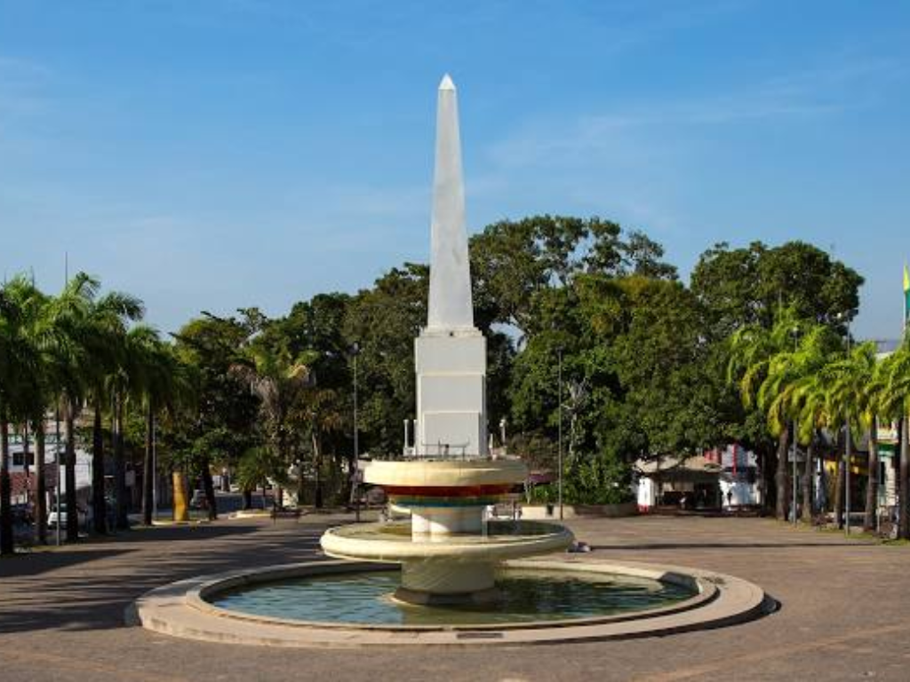

O Acre é um estado localizado na região Norte do Brasil, conhecido por sua rica biodiversidade e pela forte presença da Floresta Amazônica. Sua capital é Rio Branco. O estado possui uma economia baseada no extrativismo vegetal, com destaque para a borracha, a castanha-do-pará e a madeira. A cultura acreana é fortemente influenciada pelas tradições indígenas e nordestinas, refletindo-se em suas festas populares, culinária e artesanato.

Voltar